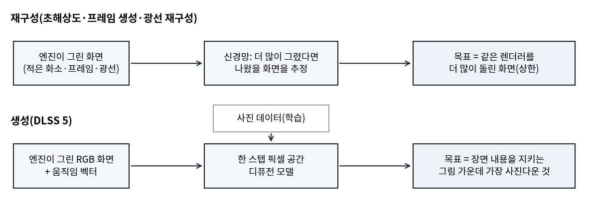
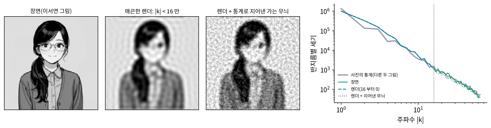
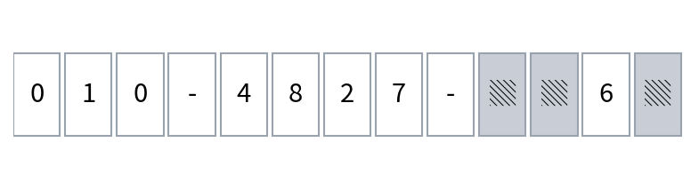
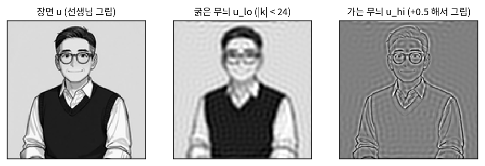
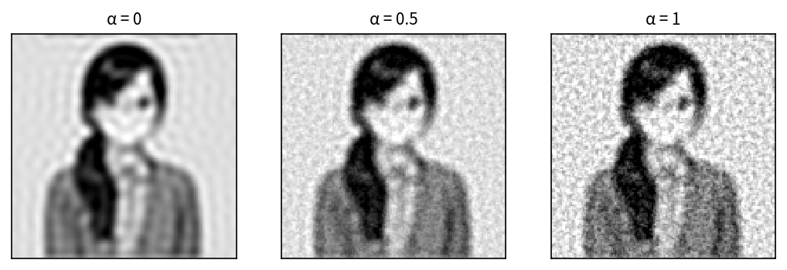

생성형 렌더링: 렌더링한 화면을 사진의 통계로 다시 그리기
스펙트럴 렌더링은 빛과 색의 물리를 바로잡지만, 그래도 CG 티가 다 사라지지는 않는다. 진짜 사진도 표면이 매끈하면 CG 로 보였고, DLSS 5 기술 보고서도 피부 속에서 퍼지는 빛은 넉넉한 오프라인 렌더링 예산으로도 충실히 계산하기 어렵다고 적었다. 1초에 60장을 그리는 게임은 한 장에 1000/60 = 16.7 ms 를 쓰는데, 그 대부분은 이미 물리 시뮬레이션, 애니메이션, 기본 렌더링에 들어간다. 모자란 것이 물리 원리가 아니라 계산과 자산의 양이라면, 사진을 많이 본 신경망이 화면에 모자란 것을 채워 넣을 수는 없을까?
역사: 재구성에서 생성으로
엔비디아의 DLSS(Deep Learning Super Sampling)는 처음에 적은 화소로 그린 화면을 큰 화면으로 키우는 기술이었다. 그 뒤 프레임 사이를 지어 넣는 프레임 생성, 광선을 적게 쏘아 생긴 노이즈를 걷는 광선 재구성이 더해졌다. 2026년 9월 엔비디아가 낸 DLSS 5 기술 보고서는 이 모두를 「재구성」으로 묶었다. 렌더러가 화소, 프레임, 광선을 더 많이 썼다면 그렸을 화면을 추정하는 일이고, 재구성은 그것이 재구성하는 원래 출력보다 더 나아 보일 수 없다는 것이다. 보고서는 DLSS 5 를 최종 화면의 겉모습을 「생성」하는 첫 DLSS 라고 불렀다.

발표는 2026년 3월 엔비디아의 개발자 행사 GTC 에서였다. 젠슨 황(Jensen Huang)은 DLSS 5 를 「그래픽의 GPT 모먼트」라 불렀고, 게임 엔진이 그린 색과 움직임 벡터를 받아 사진 같은 조명과 재질을 더한다고 소개했다. 공개된 시연 영상에서 인물의 얼굴이 다른 사람처럼 바뀌었다는 비판이 곧바로 일었다. 게임 기술 매체 디지털 파운드리의 바탈리아(Alex Battaglia)는 DLSS 5 가 예술가의 의도를 거칠게 짓밟는다고 했다. 9월 기술 보고서와 함께 첫 게임이 나왔고, 10월에는 모델을 줄여 두 배 빨라진 판이 나왔다.

사진 같은 화면을 만드는 생성 모델은 몇 년 전부터 있었잖아요. 왜 게임에는 이제야 들어왔어요?

이미지 생성 모델은 그림 한 장에 몇 초씩 걸려도 괜찮아요. 게임은 한 장에 16.7 ms 인데, 그 대부분은 이미 다른 일이 쓰고 있죠. 보고서는 RTX 5090 에서 4K 화면 한 장에 몇 밀리초 안쪽이라고 적었어요.

그 시간 안에 디퓨전 모델을 돌리려면 노이즈를 여러 번 걷는 대신 한 번에 끝내야겠네요. 매 프레임 답이 들쭉날쭉해도 안 되고요.

그리고 얼굴이 바뀌었다는 비판은, 엔진이 그린 얼굴과 신경망이 그린 얼굴이 달랐다는 거죠. 재구성이면 원래 렌더보다 나을 수 없지만 원래 렌더를 벗어나지도 않았을 테고요.

그래요. 원래 렌더에 묶여 있으면 나아질 수 없고, 원래 렌더에서 풀려나면 장면이 바뀔 수 있어요. 둘 사이에서 무엇을 지키고 무엇을 바꾸는지가 이 절의 물음이에요.
매끈한 렌더에 사진의 가는 무늬를 지어 붙이면
두 끝을 장난감으로 보자. 이서연 그림(128 × 128칸)을 「장면」으로 두고, 그 그림에서 |k| < 16 인 굵은 무늬만 남긴 것을 「매끈한 렌더」로 둔다. 질감을 그릴 예산이 없어 가는 무늬가 빠진 렌더를 흉내 낸 것이다. 장면 세기(평균을 뺀 제곱합)의 10.44%가 |k| ≥ 16 인 가는 무늬에 있었고, 렌더는 그것을 모두 잃었다. 재구성은 렌더가 가진 정보만 쓰므로 이 10.44% 를 되살릴 수 없다.
반대 끝은 사진의 통계로 지어내는 것이다. 다른 두 그림(선생님, 김민준)의 반지름별 평균 크기를 「사진의 통계」로 두고, |k| ≥ 16 인 칸에 그 크기와 무작위 위상을 넣은 가는 무늬 g 를 만들어 렌더에 더했다.

| 그림 | 장면과의 상관 | 사진다움 거리 |
|---|---|---|
| 장면 | 1 | 0.074 |
| 매끈한 렌더 | 0.9464 | 13.990 |
| 렌더 + 지어낸 가는 무늬 | 0.9072 | 0.125 |
사진다움 거리는 |k| ≥ 16 에서 반지름별 세기의 로그가 사진의 통계와 평균 얼마나 다른지 잰 값이다(0 이면 같다). 지어낸 무늬를 더하자 이 거리가 13.99 에서 0.125 로, 장면 자체(0.074)에 가깝게 내려왔다. 세기만 보면 질감 있는 사진인데, 장면과의 상관은 0.9464 에서 0.9072 로 오히려 내려갔다. 지어낸 무늬와 장면의 가는 무늬 사이 상관이 0.0129 로 거의 0 이기 때문이다. 세기는 맞췄지만 위상, 다시 말해 가는 무늬가 어디에 놓이는지는 지어냈고, 무작위 씨앗을 20 번 바꿔도 상관은 0.9044 ~ 0.9089 였다.
이렇게 렌더링한 화면을 받아, 사진 데이터에서 배운 겉모습으로 최종 화면을 만들어 내는 렌더링 단계를 생성형 렌더링 (사진의 통계로 최종 화면을 만드는 단계 / generative rendering)이라 한다. DLSS 5 보고서는 그 목표를 식 하나로 적었다.
장난감의 두 끝은 DLSS 5 의 목표 식 f(r) ≈ argmax pphoto(x) 의 양 끝이다. C(r)가 렌더 하나뿐이면 재구성이고, 아무 제약이 없으면 장면과 상관없는 사진다운 그림이 나온다. DLSS 5 는 그 사이에서 장면 내용에 묶인 채 사진의 분포 쪽으로 가는데, 보고서는 그 입력과 출력이 모두 RGB 라고 여러 번 적었다. 추론 때 받는 것은 엔진이 그린 RGB 화면, 움직임 벡터, 이어 온 시간 상태, 조절 값이고, 렌더러의 바탕색(알베도)·표면 법선·조명 정보는 학습 때 감독 신호로만 쓰고 출시된 모델의 입력에는 넣지 않았다. 사진다운 겉모습은 사진 데이터에서 통계로 배운다. 그리고 DLSS 5 의 출력이 렌더보다 더 사실적이라고 판정되더라도 그것은 사람이 느끼는 사진다움의 증거일 뿐, 렌더러가 정한 물리 기준에 더 가깝다는 뜻은 아니라고 스스로 밝혔다. 엔비디아가 낸 다섯 글 어디에도 파장이나 스펙트럼이라는 말은 없다. 그러니 DLSS 5 는 파장을 계산하는 신경 스펙트럴 렌더링이 아니라, 신경망이 화면 전체를 RGB 로 다시 그리는 흐름에 서 있다.
ML에서: 구조와 톤의 두 조절 항목
DLSS 5 는 반복 없이 한 번 계산하는 픽셀 공간 디퓨전 모델이고, 같은 입력이면 같은 출력을 낸다. 압축한 잠재 공간이 아니라 화소 위에서 바로 도는데, 보고서는 그 대가로 입력의 계단 현상(에일리어싱)까지 그대로 남는다고 적었다. 개발자에게는 Structure Intensity(구조 세기)와 Tone Intensity(톤 세기) 두 조절 항목이 있다. 엔비디아 발표는 구조를 앰비언트 오클루전(구석이나 물체 사이가 어두워지는 효과)·반사·피부 산란 같은 높은 주파수 디테일로, 톤을 넓은 조명과 색 반응 같은 낮은 주파수로 설명했고, 보고서는 두 조절이 그림 내용의 높은·낮은 공간 주파수 띠에 「행동으로 대응한다」고 적었다. 합성 그림의 굵은 무늬 크기만 실제 사진의 것으로 바꿔 색감과 밝기의 큰 흐름을 사진처럼 만든 양과 소아토(2020)의 방법을 떠올리면, 톤 조절은 같은 방향의 일이다. 다만 보고서는 내부에서 주파수를 어떻게 나누는지 밝히지 않았으므로 같은 방법이라고 단정할 수는 없다. 성능은 엔비디아 자체 평가에서 사람들이 짝지어 본 비교로 쟀고, 이미지 생성 모델들과 견줄 만하다고 보고했다.
문제 10. 번진 전화번호
쪽지에 적힌 전화번호 010-4827-▒▒6▒ 의 네 자리 가운데 세 자리가 번졌다. 사진 복원 앱에 넣었더니 「010-4827-1162」로 또렷하게 바꿔 주었다. (가) 번진 세 자리에 들어갈 수 있는 경우는 몇 가지인가? 아무것도 모르고 하나를 고르면 맞을 확률은? (나) 앱이 낸 번호는 전화번호로서 그럴듯한가? 맞는 번호일 확률이 올라갔는가? (다) 번진 자리의 흔적이 조금 남아 있다면 무엇이 달라지는가?

(가)는 10 × 10 × 10 = 1000 가지라서 1/1000 이요. 그런데 앱이 또렷하게 만들어 줬으니까 그 번호가 맞겠죠.
앱은 번진 자리에서 무엇을 보고 1, 1, 2 를 골랐을까요?
흔적이 거의 없으면… 볼 게 없네요. 숫자가 보통 이렇게 생겼다는 것만으로 그린 거고요. 그러면 확률은 여전히 1/1000 이에요.
그래도 결과는 전화번호처럼 생겼어. 숫자 모양도 반듯하고. 그럴듯함은 100% 인데 맞을 확률은 0.1% 인 거지.

(다)처럼 흔적이 남아 있으면요?

흔적이 후보를 줄여 주니까 맞을 확률이 올라가요. 예를 들어 첫 자리에 세로 막대 흔적이 있으면 1, 4, 7 쯤으로 줄고요. 앱이 흔적에 묶여 있을수록 믿을 만해요.

시험 답안이 번져서 조교가 「이 학생이면 이렇게 썼겠지」 하고 채워 주는 거랑 같네요. 글씨는 깔끔한데 그게 제 답은 아니죠.
문제 11. 맞는 세기, 틀린 자리
장면 u 를 굵은 무늬 ulo(|k| < 24)와 가는 무늬 uhi 로 나눈다(평균은 ulo 에). 가는 무늬가 평균을 뺀 세기에서 차지하는 비율을 q 라 하자. 렌더는 ulo 이고 생성은 ulo + g 인데, g 는 가는 무늬 칸에만 있고, 세기가 uhi 와 같으며 uhi 와 상관이 0 이다. (가) 렌더와 장면의 상관을 q 로 나타내라. (나) 생성과 장면의 상관을 q 로 나타내라. (다) 선생님 그림에서 q = 0.0637 일 때 두 상관을 구하고 스크립트 값과 견줘라. g 가 uhi 와 상관 c 를 가지면 어떻게 되는가?

상관은 스크립트로 바로 나오지만… 식으로는 어디서 시작하죠?
평균을 뺀 두 그림의 상관은 내적을 두 길이로 나눈 거죠. 굵은 무늬와 가는 무늬는 서로 어떤 관계예요?
서로 다른 주파수 칸에 있으니까 직교해요. 그럼 |u|² = |ulo|² + |uhi|² 이고, 파스발 등식 그대로네요.

(가)는 ⟨ulo, u⟩ = ⟨ulo, ulo + uhi⟩ = |ulo|² 니까, 상관은 |ulo|²/(|ulo||u|) = |ulo|/|u| = √(1 − q).
(나)는 분자와 분모가 각각 어떻게 바뀌죠?
분자는 ⟨ulo + g, u⟩ 인데, g 는 ulo 와 직교하고 uhi 와 상관이 0 이니까 그대로 |ulo|².
분모의 길이는요? ulo 일 때와 같을까요?
아니요, g 가 더해졌으니 길어져요. 분모의 길이는 |ulo + g|² = |ulo|² + |g|² = |u|² 라서 |u| 예요. 그럼 상관은 |ulo|²/|u|² = 1 − q.
√(1 − q) 가 1 − q 로, 상관이 제곱으로 떨어지네요. (다)는 √0.9363 = 0.9676, 그리고 0.9363. 스크립트는 0.9676 과 0.9358 이에요. 뒤쪽이 조금 다른 건 g 와 uhi 의 상관이 딱 0 이 아니라 −0.0079 라서고요.
가장자리 이야기에서 위상을 흩은 가는 무늬를 굵은 무늬에 더했을 때 닮음이 0.9676 에서 0.9365 로 내려간 것도 이 상관 식 1 − q 였네.
g 가 가는 무늬를 일부 맞히면요?
음, 분자에 c|uhi|² 가 더해지니까 (1 − q) + cq 요. c = 0.5 면 0.9682 로 렌더(0.9676)를 겨우 넘고, c = 0.9 면 0.9936 이에요. 스크립트도 0.9679 와 0.9936 이에요.

세기를 맞히는 것만으로는 장면에 가까워지지 않아요. 가는 무늬의 상관이 절반은 넘어야 렌더보다 나아지고요. 사진다움과 장면 일치는 다른 점수예요.
발표 자료에 그럴듯한 그래프를 아무거나 채워 넣으면 슬라이드는 꽉 차 보여도 내용 점수는 떨어지는 거네요.
문제 12. 구조 세기를 얼마나 올릴까
본문의 장난감에서 렌더 r 에 지어낸 가는 무늬 g 를 α(알파)배 더한 r + αg 를 내는데, α 는 DLSS 5 의 구조 세기를 흉내 낸 값이다. (가) α = 0, 0.5, 1 일 때 장면과의 상관과 사진다움 거리를 구하라. (나) 두 점수가 각각 가장 좋은 α 는? α = 1.25 이면 사진다움 거리가 장면 자체(0.074)보다 작아진다. 무슨 뜻인가? (다) 인물 얼굴이 다른 사람처럼 바뀐다는 비판과, 얼굴 자리에서 효과를 빼는 마스크를 (가)의 두 점수로 설명하라.

스크립트 값이에요. α = 0 은 상관 0.9464 에 거리 13.990, α = 0.5 는 0.9364 와 0.720, α = 1 은 0.9072 와 0.125.
(나)는 상관이 α = 0 에서 가장 크고, 거리는 α 를 올릴수록 작아져. 둘이 반대로 가네.
그러면 어디서 멈출지는 무엇이 정하죠?
무엇을 원하느냐요. 게임 화면이 사진 같아 보이길 원하면 1 쪽, 디자이너가 그린 그대로를 원하면 0 쪽이요.
α = 1.25 는요? 장면보다 더 사진다워졌어요.
잠깐, 거리가 0.068 로 장면의 0.074 보다 작아요. 그런데 상관은 0.8869 로 더 떨어지고요. 「사진의 평균적인 모습」에 장면보다 더 가까워졌다는 거지, 장면에 가까워진 게 아니에요. 그 장면만의 특징이 오히려 평균 쪽으로 끌려간 거고요.
그 말을 사람 얼굴에 대 보면요?
얼굴은 사람마다 다른 작은 특징이 그 사람을 알아보게 하잖아요. 그 자리의 가는 무늬를 사진의 평균적인 통계로 채우면, 이 인물이 아니라 「사진 속 흔한 얼굴」 쪽으로 가요. 다른 사람처럼 보인다는 비판이 그거고요.
그래서 얼굴 자리에서만 α 를 낮추는 마스크가 있는 거네요. 화면 전체는 사진답게, 얼굴은 원래 렌더 쪽으로.
단체 사진 보정 앱이 모두를 비슷한 미남 미녀로 만들어서 누가 누군지 헷갈리는 거랑 같네요.